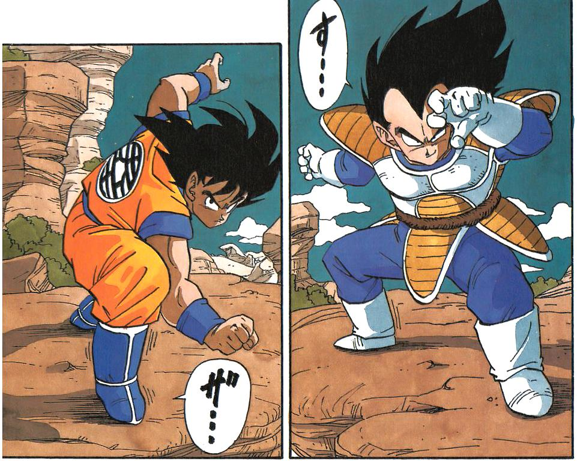

Overview
Dragon ball is a manga series that was created by Akira Toriyama in 1984. The story revolves around a charachter named Goku and his adventures on wanting to get stronger and stronger. The manga was based off of the Chinese novel Journey to the West which revolves around the monkey king which Goku is based off. The story has been changed to fit his new creation but used the same template as the novel. With this Toriyama was able to explore new settings that wasn't used in manga at that time. The manga shows many traits of Chinese culture down to the different fighting moves and even the robe that Goku wears. Toriyama also incorporated influences from his home country Japan. In 1986 the first anime adaptation of Dragon ball aired in Japan boosting its popularity. In 1989 Toriyama decided to continue the manga by making his charachters all grown up, the title was Dragon ball Z. Because of Toriyama's specfifc sense of humor; it was harder to bring the show to the states because amwrican audiences didn't connect with the show. The first peice of dragnon ball media to make it to the states was an NES game but it was stripped of its licence before arrival stripping the game of its original content; they named it Dragonpower. The very next year America got its first tatse of the Dragon ball anime but only about 5 test episodes were released but was quicly cancelled. After FUNnimation bought the rights to Dragon ball they decided to skip to Dragon ball Z which they thought would translate better with Americans. As the show was aired they would take out specific scenes to better comply with the audience. After only two seasons of aring FUNnimation pulled the plug. This could have been the end of Dragon Ball Z in the states. On August 31, 1998 Dragon ball Z first aired on Cartoon Networks's Toonami which was one of Americas first showcases of different animes. Ratings went through the roof which made FUNnimation bring the rest of the series to the US. Today Dragon Ball still aires on Toonami with the right to offical be uncut which means the US cannot change the origibal script. Since then the series has been widely loved and seen as one of the gratest manga and anime of all time.
Content of show
Dragon Ball z has different sagas that make up the overall story.
- Saiyan Saga
- Frieza Saga
- Cell Saga
- Buu Saga
Saiyan Saga
In this saga the grown up Goku finds out that he comes from an elite warrior race called the saiyans and that he was sent to Earth as a baby to later take over Earth. After meeting his brother Raditz and losing in a battle with him; Raditz takes Goku's son Gohan and threats to kill him unless Goku can beat him. After beating Raditz he is told that two new saiyans are coming to Earth in two years. After coming back to life Goku fights the two saiyans named Nappa and Vegeta and after winning must travel to a distant planet called Namek.
Frieza Saga

In this saga Goku and his fiends must go up againt the one known as Frieza. He is a blood thirsty warrior whos sole purpose is to rule the entire universe. This is the first sage were the legendary super Saiyan is showed after Frieza kills one of Gokus friends he is forced to awake the monster in him to deafeat Frieza and save the universe.
Cell Saga

In this saga the evil adroids created by Dr Gero are causing havoc across the planet but once a creature named Cell shows up and absorbs the two other androids he becomes the strongest person in the universe. But Goku sees a secret power in his son Gohan that no one else can see. Once Cell pushes Gohan to far he is forced to release his power which is also the first appearance of the super Saiyan 2.
Buu Saga
In this saga which takes place 7 years after the cell saga is about how all the z fighters are doing after the death of Goku. Gohan is the new protector of Earth and everything is good until the evil Buu is awaken and starts to terrorize the planet. Goku and his friends must stop him before he turns everyone into chocolate. In this saga goku becomes the legendary super Saiyan 3.